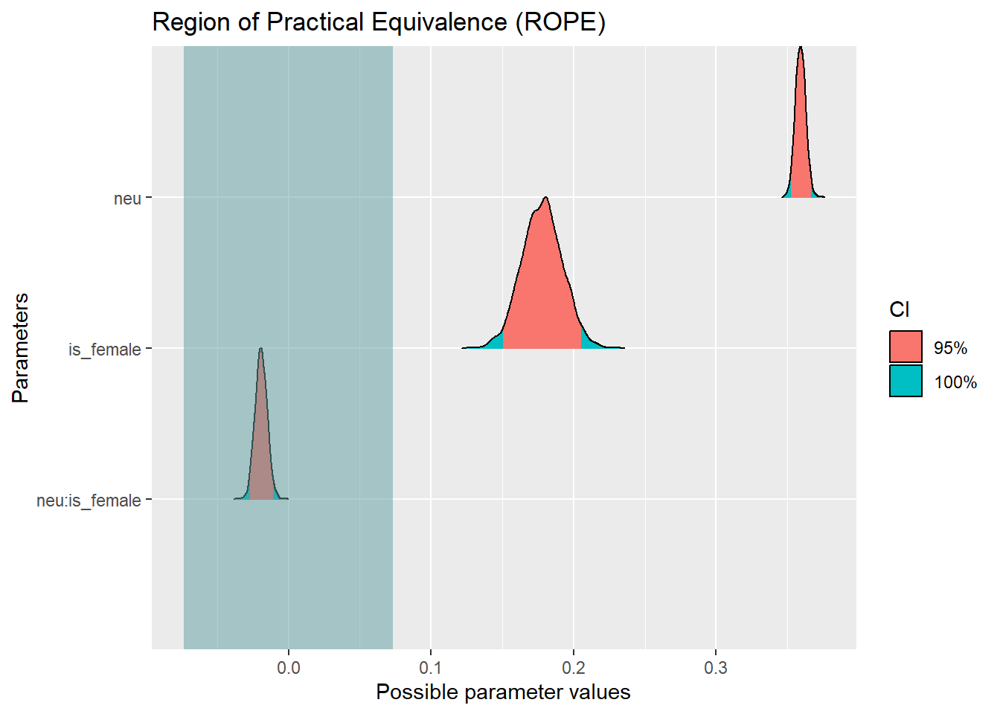
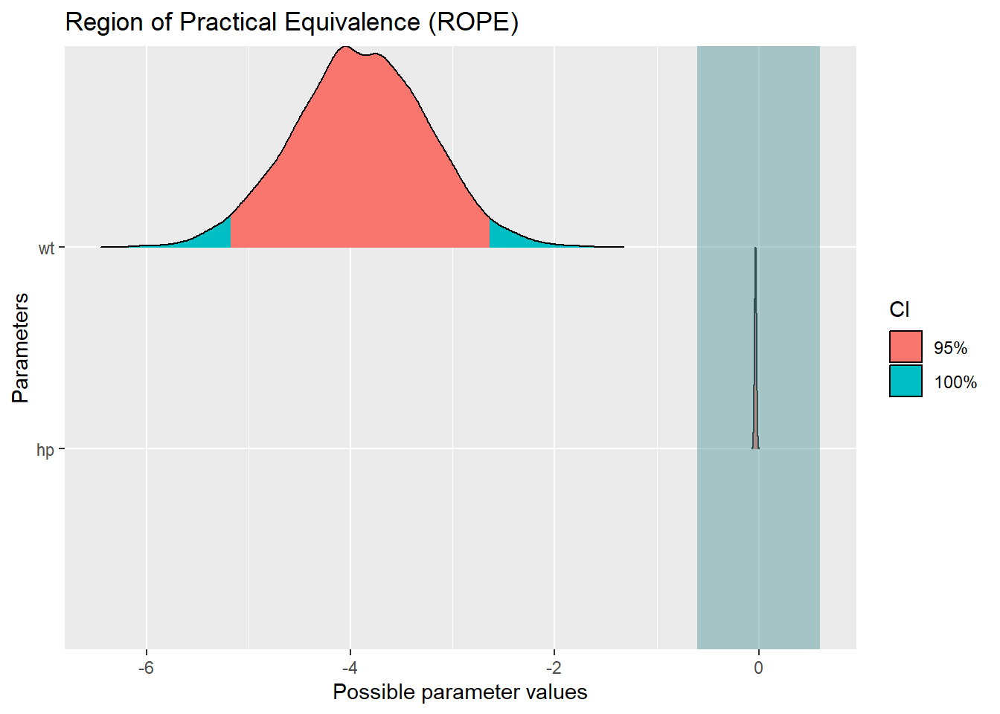
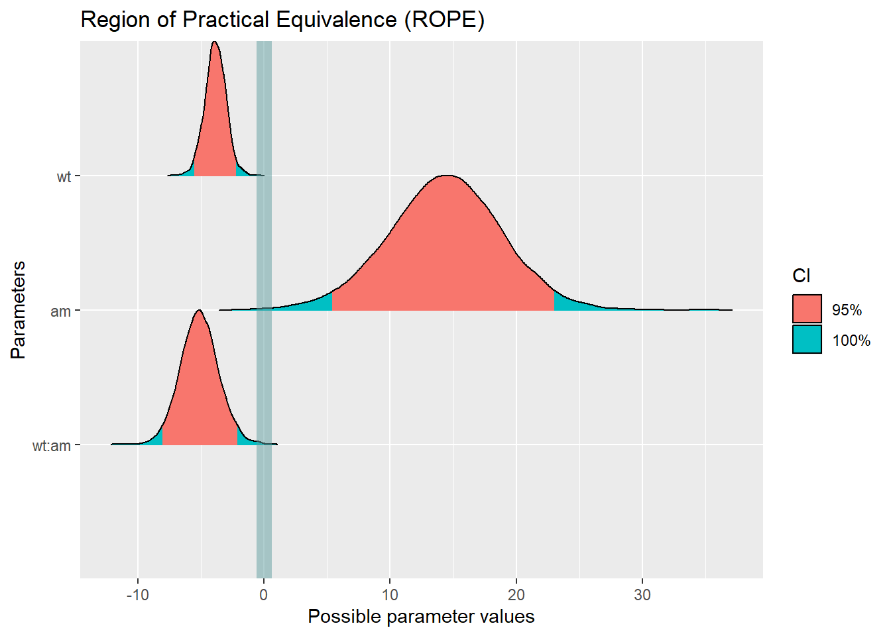
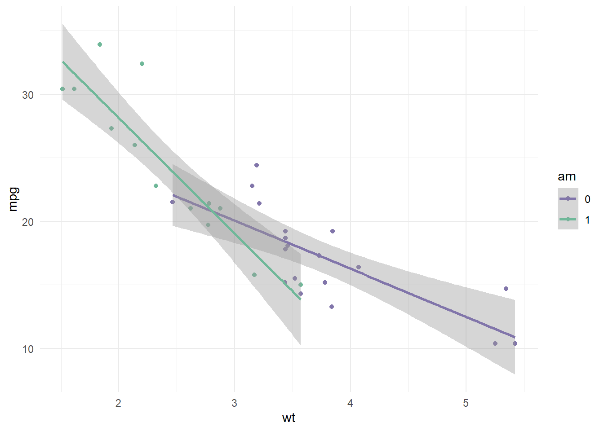

library(tidyverse)
library(easystats)
library(rstanarm)
library(ggthemes)
library(palmerpenguins)9 Klausurvorbereitung
Nehmt euch als Zeit ungefähr 5 min pro Aufgabe.
Warning
Hinweis: Achtung, die Ergebnisse können selbst mit set.seed() etwas variieren!
9.1 Aufgabe Penguins
Penguins Datensatz: AV: body_mass_g
UV1: flipper_length_mm
UV2: bill_length_mm
Stelle ein Modell auf, das den Zusammenhang zwischen der AV und UV1 untersucht und gib den Punktschätzer des Effekts an.
p1 <-
stan_glm(body_mass_g ~ flipper_length_mm, data = penguins, seed = 42, refresh = 0)
parameters(p1)Der Punktschätzer des Effekts (Effekt ist so zu verstehen, was hat einen Effekt auf unsere AV?) beträgt hier 49.72. Das heißt, dass ein Pinguin, dessen Flosse einen Millimeter länger ist als die eines anderen, 49.72 g mehr wiegen wird laut unserer Prognose.
Gib den Punktschätzer für eine Beobachtung an, bei der alle Regressionskoeffizienten den Wert 0 aufweisen.
parameters(p1)Alle Regressionskoeffizienten sind 0, bedeutet dass alle UVs auf 0 gesetzt werden. Erinnern wir uns kurz nochmal an die Formel für ein Gerade: y = m*x + c. Wenn wir x = 0 machen, dann bleibt nur noch der Y-Achsenabschnitt (= Intercept) übrig. Also ist der Punktschätzer für eine Beobachtung, bei der alle Regressionskoeffizienten den Wert 0 aufweisen, -5787.35.
Gib die Breite des 90% HDI-Intervalls für den Effekt an.
parameters(p1, ci_method = "hdi", ci = .9)47.24 - 52.15[1] -4.91Für den Effekt angeben, also wieder für unsere UV: 4.91 ist die Breite, dass Intervall ist [47.24, 52.15]
Gib den Punktschätzer für den mittleren Wert des Körpergewichts eines Pinguins mit durschnittlicher Flossenlänge an.
# Neue Tabelle mit zentrierter UV erstellen
penguins_c <-
penguins |>
drop_na() %>%
mutate(flipper_length_mm_c = flipper_length_mm - mean(flipper_length_mm))
p2 <- stan_glm(body_mass_g ~ flipper_length_mm_c, data = penguins_c, refresh = 0, seed = 42)
parameters(p2)Ein Penguin, der eine durchschnittliche Flossenlänge hat, hat ein mittleres Körpergewicht von 4207.22 g. Wenn man diesen Wert nochmal mit den nicht zentrierten Werten vergleicht, dann machen die Werte jetzt auf einmal viel mehr Sinn, denn vorher war das mittlere Körpergewicht mit einer Flossenlänge von 0 mm -5787 g.
Gib den Punktschätzer für den mittleren Wert des Körpergewichts eines Adelie-Pinguins mit durschnittlicher Flossenlänge in Kilogramm an.
# neue Tabelle mit nur Adelie-Pinguinen und dem Gewicht in Kilogramm erstellen
penguins_adelie_c <-
penguins %>%
filter(species == "Adelie") %>%
drop_na() %>%
mutate(flipper_length_mm_c = flipper_length_mm - mean(flipper_length_mm)) %>%
mutate(body_mass_kg = body_mass_g/1000)
p2 <- stan_glm(body_mass_kg ~ flipper_length_mm_c, data = penguins_adelie_c, refresh = 0, seed = 42)
parameters(p2)Das mittlere Gewicht eines Adelie-Pinguins mit einer durchschnittlichen Flossenlänge beträgt 3.71 kg. (Adelie Pinguine scheinen im Durchschnitt etwas leichter zu sein als der Durchschnitt aller Pinguine.)
9.2 rope4
Ist der Unterschied zwischen Männern und Frauen (Dem_gender) im Hinblick zum Zusammenhang von Stress (PSS10_avg, AV) und Neurotizismus (neu, UV) vernachlässigbar klein?
Den Datensatz können Sie so herunterladen (Achtung, groß):
osf_d_path <- "https://osf.io/cjxua/?action=download"
d <- read_csv(osf_d_path)Wir ziehen uns nur die 3 Spalten in eine neue Tabelle, die wir auch wirklich brauchen.
d2 <-
d %>%
select(PSS10_avg, neu, Dem_gender)Wir filtern zuerst aus der Spalte Gender nur die Fälle für male und female, droppen dann alle NAs und erstellen anschließend eine neue Spalte für Geschlecht, bei dem alle weiblichen Fälle den Wert 1 und alle männlichen Fälle den Wert 0 zugewiesen bekommen.
d3 <-
d2 %>%
filter(Dem_gender %in% c("Female", "Male")) %>%
drop_na() %>%
mutate( is_female = case_when(
Dem_gender == "Female" ~ 1,
Dem_gender == "Male" ~ 0)) %>%
select(-Dem_gender)
d3 |>
count(is_female)m1 <-
stan_glm(PSS10_avg ~ neu + is_female + neu:is_female,
refresh = 0,
seed = 42,
data = d3)
parameters(m1)rope(m1)Possible multicollinearity between is_female and neu (r = 0.8), neu:is_female and neu (r = 0.86). This might lead to inappropriate results. See 'Details' in '?rope'.plot(rope(m1))Possible multicollinearity between is_female and neu (r = 0.8), neu:is_female and neu (r = 0.86). This might lead to inappropriate results. See 'Details' in '?rope'.
Antwort: Ja, der Effekt ist vernachlässigbar klein! Wenn dem nicht so wäre, dann wäre der Effekt von neuro auf Stress abhängig von der Ausprägung einer dritten Variable, nämlich vom Geschlecht der Probandis. Konkret würde das zum Beispiel heißen, dass die Ausprägung von Neuro bei Männern einen stärken bzw. schwächeren Einfluss auf Stress hat als bei Frauen.
9.3 penguins-stan-05
Wir untersuchen Einflussfaktoren bzw. Prädiktoren auf das Körpergewicht von Pinguinen. In dieser Aufgabe untersuchen wir den Zusammenhang von Schnabellänge (als UV) und Körpergewicht (als AV).
Aufgabe: Wie breit ist das 95%-ETI des Effekts, wenn Sie nur die Spezies Adelie untersuchen?
# nur nach Adelie filtern
penguins_adelie <-
penguins %>%
filter(species == "Adelie")m1 <- stan_glm(body_mass_g ~ bill_length_mm,
data = penguins_adelie,
seed = 42,
refresh = 0)
parameters(m1, ci = .95, ci_method = "eti")71.63 - 118.07[1] -46.44Es war nach dem 95% ETI des EFFEKTS gefragt, also schauen wir wieder bei der UV nach. Das Intervall hat eine Breite von 46.44
9.4 mtcars Aufgabe
Zur Lösung dieser Aufgabe ist folgendes lineares Modell zu berechnen: AV: mpg. UVs: hp, vs. Der gewählte Prädiktor ist die erste oben genannte UV: hp (uv1). Aufgabe: Wie hoch ist die Wahrscheinlichkeit, dass der Effekt der gewählten UV größer ist als 0.2-SD-Einheiten der AV?
data("mtcars")
g2 <-
stan_glm(mpg ~ hp + vs, data = mtcars, refresh = 0, seed = 42)
g2_tab <-
g2 %>%
as_tibble()
g2 # man ließt hier aus der Angabe ab, wie groß die Standardabweichung der AV ist und nimmt diese dann mal 0.2stan_glm
family: gaussian [identity]
formula: mpg ~ hp + vs
observations: 32
predictors: 3
------
Median MAD_SD
(Intercept) 26.8 2.9
hp -0.1 0.0
vs 2.7 2.0
Auxiliary parameter(s):
Median MAD_SD
sigma 3.9 0.5
------
* For help interpreting the printed output see ?print.stanreg
* For info on the priors used see ?prior_summary.stanreg2.9*0.2 [1] 0.58#0.58
g2_tab %>%
count(hp > 0.58)DIe Wahrscheinlichkeit dafür, dass der Effekt größer als 0.2 SD-Einheiten der AV ist, beträgt 0.
9.5 Aufgabe rope
Zur Lösung dieser Aufgabe ist folgendes lineares Modell zu berechnen: AV: mpg. UVs: wt, hp.
Im Folgenden wird ein Prädiktor aus der Menge der UV näher betrachtet. Der gewählte Prädiktor ist die erste oben genannte UV: wt (uv1). Aufgabe: Geben Sie den Anteil der Stichproben der Posteriori-Verteilung an, die innerhalb des ROPE liegen!
g3 <-
stan_glm(mpg ~ wt + hp, data = mtcars, refresh = 0, seed = 42)
plot(rope(g3))
rope(g3)Die Frage war nach dem Prädiktor wt, also lesen wir ab, wie viel Prozent innerhalb des ROPEs liegen, in diesem Fall sind das 0%. Eine mögliche Antwort in Bezug auf eine Forschungsfrage könnte lauten: Die Hypothese, dass der Prädiktor wt einen Einfluss auf die AV mpg hat, kann angenommen werden. Für hp würde hier gelten: Der Einfluss von hp auf die AV mpg ist vernachlässigbar klein.
9.6 Denkaufgabe
Beziehen Sie sich auf das Regressionsmodell, für das die Ausgabe mit stan_glm() hier dargestellt ist:
## stan_glm
## family: gaussian \[identity\]
## formula: height \~ weight_c
## observations: 346
## predictors: 2
## ------
## Median MAD_SD
## (Intercept) 154.6 0.3
## weight_c 0.9 0.0
##
## Auxiliary parameter(s):
## Median MAD_SD
## sigma 5.1 0.2Betrachten Sie wieder folgende Beziehung (Gleichung bzw. Ungleichung):
\[Pr(\text{height}_i = 155|\text{weightcentered}_i=0, \alpha, \beta, \sigma) \quad \Box \quad Pr(\text{height}_i = 156|\text{weightcentered}_i=0, \alpha, \beta, \sigma)\]
Die in der obigen Beziehung angegebenen Parameter beziehen sich auf das oben dargestellt Modell.
Ergänzen Sie das korrekte Zeichen in das Rechteck \(\Box\) !
Answerlist\
\(\lt\)
\(\le\)
\(\gt\)
\(\ge\)
\(=\)
Richtig ist: \(\gt\) Antwort: Der erste Teil der Gleichung gibt die Wahrscheinlichkeit für den Punktschätzer der AV an, wenn der Regressionkoeffizient den Wert x = 0 aufweist. Es soll also die Wahrscheinlichkeit dafür angegeben werden, dass der Wert einer Beobachtung 155 ist. Der zweite Teil der Gleichung liest sich genauso, bloß dass hier die Wahrscheinlichkeit dafür berechnet werden soll, dass der Wert einer Beobachtung 156 ist. Schauen wir also jetzt oben in den Output, dann sehen wir, dass der Intercept = 154.6 ist. Also ist die Wahrscheinlichkeit größer für den Wert 155, denn dieser Wert liegt näher am wahren Wert 154.6 als der Wert 156.
9.7 mtcars 2
Untersucht wird der Effekt des Gewichts (wt) und des Schaltgetriebes (am) auf die Reichweite (mpg) eines Autos.
9.7.1 mtcars 2 a)
Wie groß ist der Unterschied in der Reichweite zwischen einem Auto mit Automatik-Schaltung im Vergleich zu einem Auto mit manuellem Schaltgetriebe, wenn der Effekt aller anderen Prädiktoren null ist?
m1 <- stan_glm(mpg ~ wt + am, data = mtcars,
seed = 42,
refresh = 0)
parameters(m1)Der Intercept zeigt uns den Punktschätzer für die mittlere Reichweite in mpg für ein Auto ohne Gewicht mit manuellem Schaltgetriebe an. In der Zeile am können wir ablesen, um wieviele Meilen pro Gallonen sich die Reichweite von Automatik-Getrieben davon unterscheidet. Das sind 0,03 Meilen. Da die Ausgabe von parameters() den Effekt der einzelnen Koeffizienten anzeigt unter der Bedingung, dass der Effekt aller anderen Koeffizienten null ist, ist das auch gleichzeitig die gesuchte Zahl.
9.7.2 mtcars 2 b)
Ist der Unterschied zwischen Autos mit Automatik vs. manueller Schaltung in Bezug auf den Effekt vom Gewicht auf die Reichweite eines Autos vernachlässigbar klein?
m2 <- stan_glm(mpg ~ wt + am + wt:am, data = mtcars,
seed = 42,
refresh = 0)rope(m2)Possible multicollinearity between am and wt (r = 0.71). This might lead to inappropriate results. See 'Details' in '?rope'.plot(rope(m2))Possible multicollinearity between am and wt (r = 0.71). This might lead to inappropriate results. See 'Details' in '?rope'.
Der Effekt ist dadurch dass der Koeffizient wt:am zu 0% im ROPE liegt, relevant und damit nicht vernachlässigbar klein. Dass ein Interaktionseffekt besteht, sieht man auch in folgendem Streudiagramm: Die Reichweite von Autos mit Automatik-Schaltung sinkt mit zunehmendem Gewicht deutlich stärker, als die von Autos mit manueller Schaltung.
mtcars %>%
mutate(am=factor(am)) %>%
ggplot(aes(x = wt, y = mpg, color= am)) +
geom_point()+
geom_smooth(method = "lm") +
theme_minimal()+
scale_color_tableau("Nuriel Stone")`geom_smooth()` using formula = 'y ~ x'